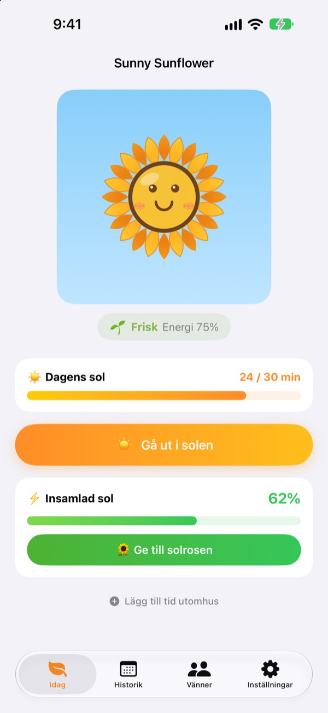
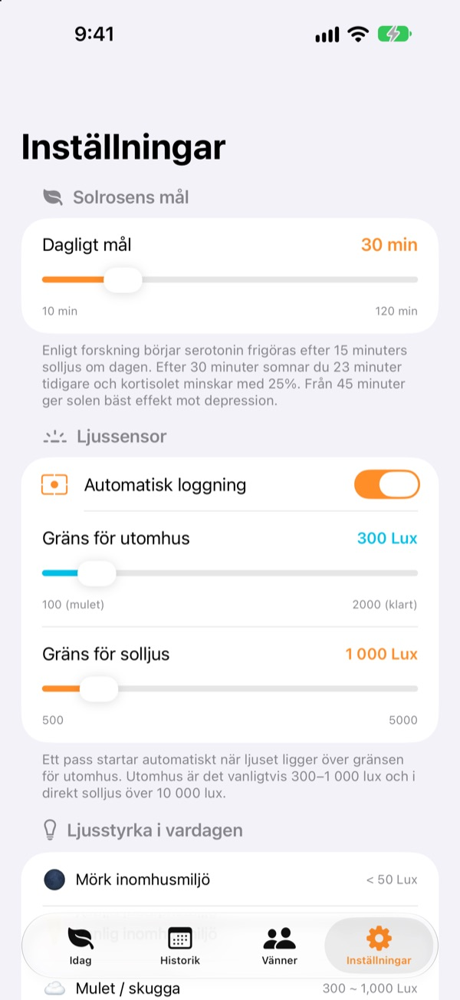
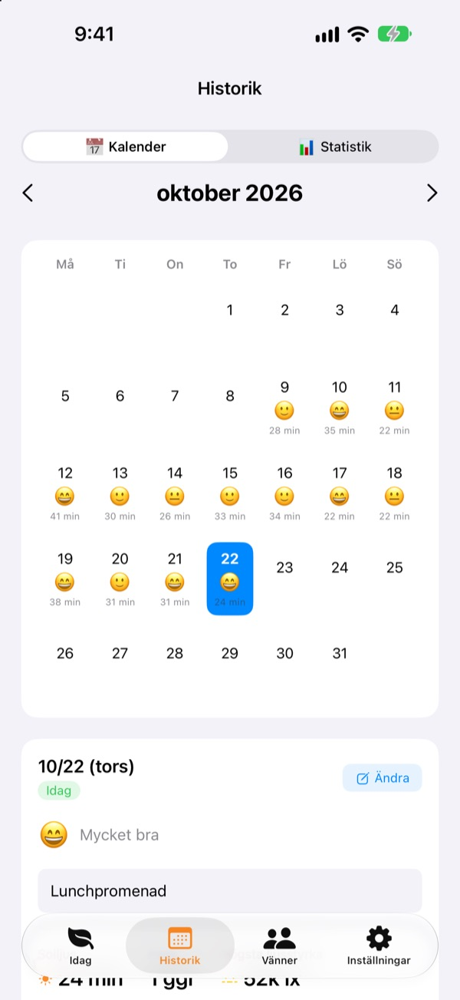
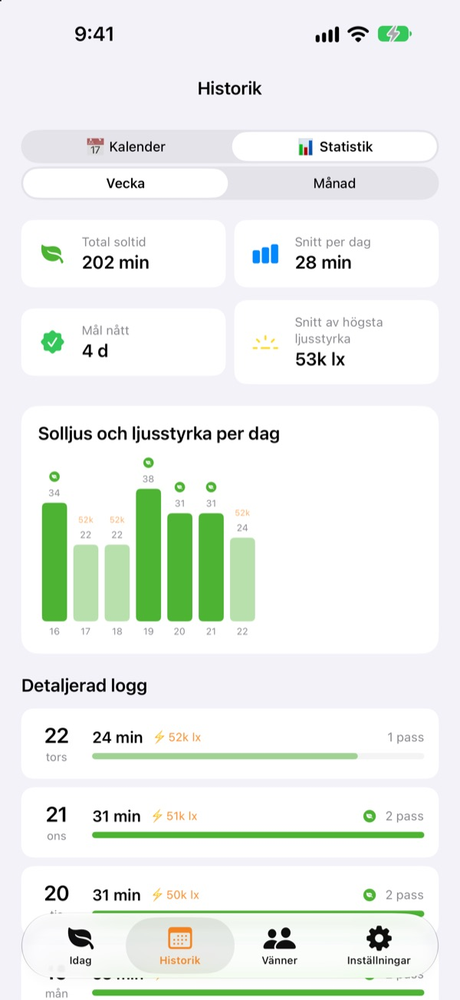

Dagens sol
får din solros att växa
Bara du går ut räknas tiden i solen upp av sig själv. Ge solrosen solljuset du samlat så blir den pigg. Glömmer du den några dagar börjar den hänga.
Alla funktioner är gratis. Din data stannar på enheten.

Samla lite sol
Välj hur ljust det är och hur länge, ta in sol och ge den till en solros som börjat sloka.
Hur många minuter sol fick du i dag?
Några steg till jobbet, en snabb sväng ut för att äta lunch. Är du inne hela dagen märker du först på kvällen att du knappt sett dagsljus. Sunny Sunflower visar din tid ute i siffror, och solrosen väntar på morgondagens promenad.
Gå ut så mäter den själv
Tryck på Gå ut i solen och gå ut. Appen uppskattar ljusstyrkan runt dig utifrån frontkamerans exponeringsdata. När ljuset håller sig på utomhusnivå i ungefär 30 sekunder börjar loggningen. Inga bilder tas eller sparas någonsin.
Sedan slås sensorn bara på i 20 sekunder varannan minut för att spara batteri.

Sol och humör, dag för dag
I kalendern får varje dag sin tid i solen, en humör-emoji och en kort anteckning. Var du ute utan att mäta? Med Lägg till tid utomhus lägger du till 5 till 120 minuter.

Vecka och månad i en blick
Vecko- och månadsstatistik visar vilka dagar du nådde målet och hur mycket sol du får i snitt. Sätt ett dagligt mål på 10 till 120 minuter och se direkt på startsidan hur mycket som fattas i dag.
Widgetar på hemskärmen och låsskärmen, och Dynamic Island, visar dagens sol och hur solrosen mår.

Kom igång i tre steg
- 1
Sätt ett dagligt mål
Det börjar på 30 minuter. I inställningarna väljer du 10 till 120.
- 2
Gå ut i solen
Tryck på
Gå ut i solenoch gå ut med appen öppen. Den frågar bara en gång om kameran. - 3
Ge solrosen energi
Tryck på
Ge till solrosenför att göra insamlad sol till energi.
Så blir ljus till sol
- Under 300 lux
- Svagt ljus: räknas inte som tid i solen
- 300–1 000 lux
- Ute/mulet: 1–3 % per 10 minuter
- 1 000–10 000 lux
- Sol: 3–33 % per 10 minuter
- Från 10 000 lux
- Stark sol: över 33 % per 10 minuter
- Insamlad sol
- minuter × genomsnittlig lux ÷ 3 000 (högst 100 % per gång)
- Solrosens energi
- sjunker 2,5 % i timmen, ungefär 60 % per dygn
Gränsen för utomhus kan ställas in mellan 100 och 2 000 lux i inställningarna. Standard är 300 lux.
Vanliga frågor
Hur mäter appen sol?
Den uppskattar ljusstyrkan runt dig (belysningsstyrkan) utifrån frontkamerans exponeringsdata. När ljuset håller sig på utomhusnivå en stund startar loggningen av sig själv. Inga bilder tas eller sparas.
Drar det mycket batteri?
När solen är bekräftad är sensorn inte på hela tiden. Den vaknar i ungefär 20 sekunder varannan minut för att mäta igen, och en enkel timer sköter resten.
Min solros hänger hela tiden.
Solrosen tappar 2,5 % energi i timmen. Samla sol och tryck på Ge till solrosen. En klar dag räcker 15 till 20 minuter i direkt sol för att täcka ett helt dygn.
Jag var ute men inget loggades.
Använd Lägg till tid utomhus längst ner på startsidan för att lägga till 5 till 120 minuter. Om loggningen har svårt att starta mulna dagar kan du sänka gränsen för utomhus i inställningarna.
Hur fungerar vänfunktionen?
När du och en vän är nära varandra (inom ungefär 10 m) och båda mäter sol kopplas ni ihop automatiskt. Med en ny person behöver ni först bekräfta att ni solar tillsammans, sedan sker det av sig självt. Kronbladen blir färgglada och får tillbaka sin egen färg under 3 dagar, och er tid tillsammans sparas under fliken Vänner. Båda behöver appen och åtkomst till Bluetooth och lokalt nätverk.
Är det verkligen gratis?
Ja. Ingen reklam, inga köp, alla funktioner ingår. Gillar du appen kan du ge dricks, men det låser inte upp något extra.
Kan jag säkerhetskopiera eller flytta min data?
Allt stannar på enheten utan server, och de senaste 90 dagarna sparas. Det finns ingen separat export, men din data ingår i den vanliga iPhone-säkerhetskopian i iCloud eller på datorn.
Hur raderar jag all data?
Tryck på Återställ data i appens inställningar, eller radera appen. Det går inte att ångra.
Var rapporterar jag ett fel?
Skriv till adressen nedan eller skapa en issue på GitHub (github.com/M1zz/SunlightTracker/issues). Enhetsmodell, iOS-version och vad som hände hjälper mycket. Vi svarar oftast inom några dagar.
Frågor eller synpunkter? Skriv till leeo@kakao.com.